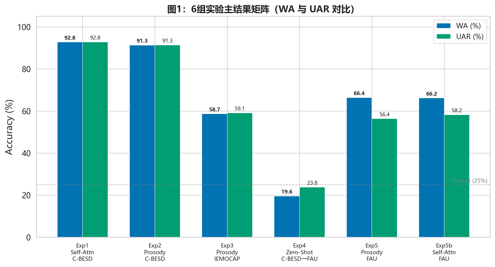
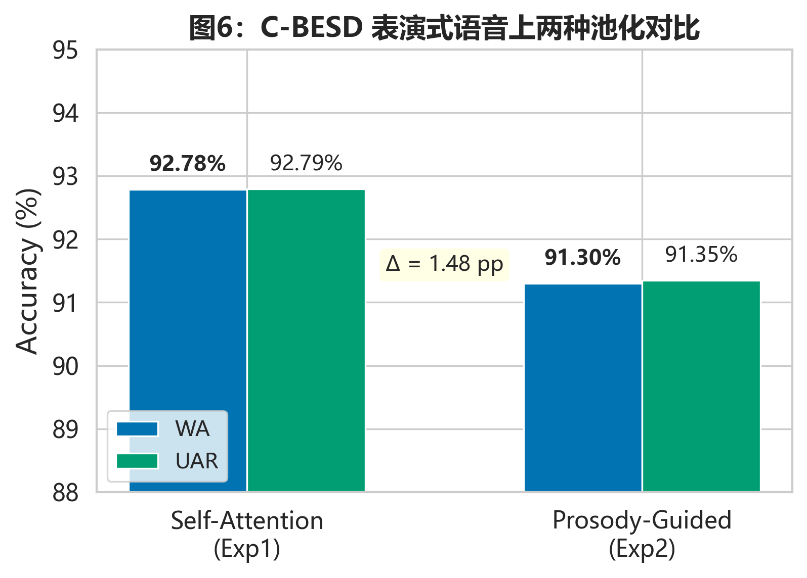
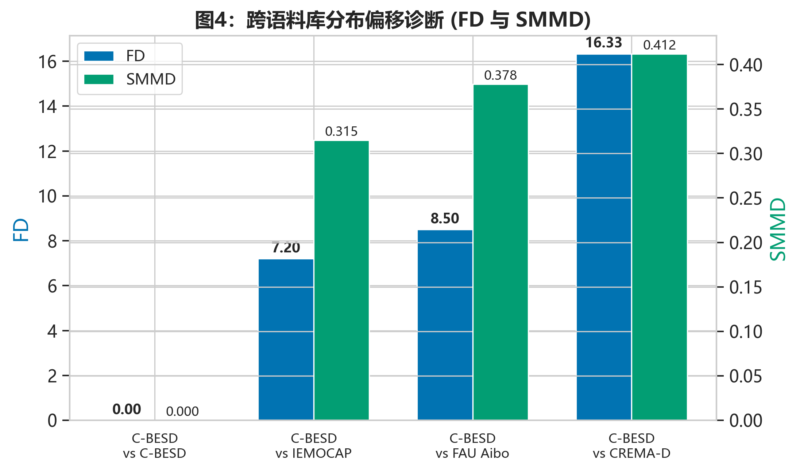
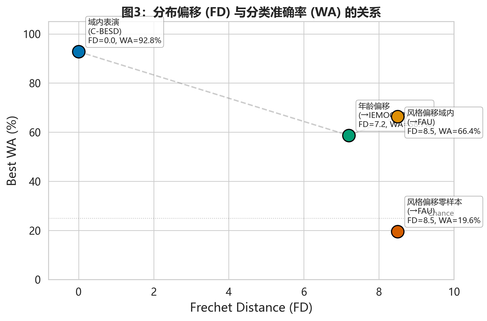
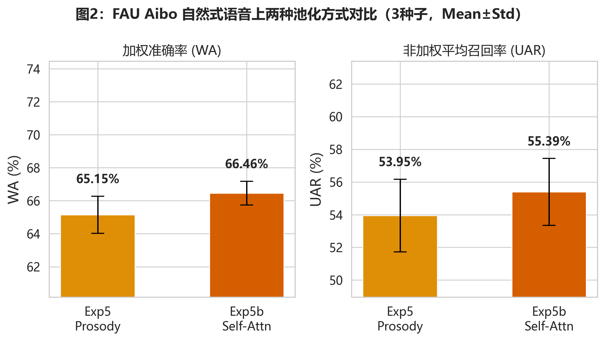
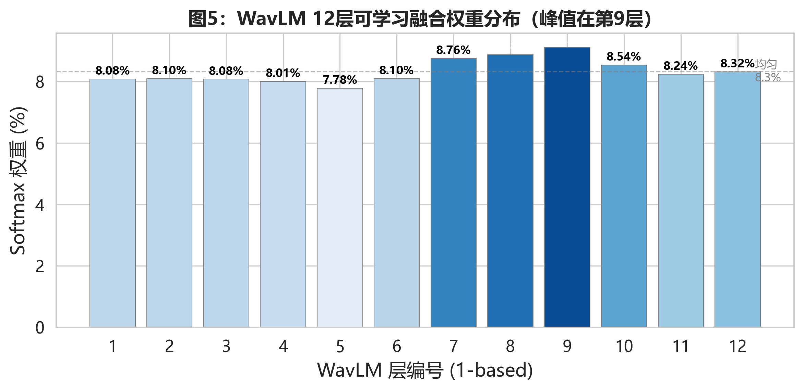

关键词：儿童语音情绪识别；分布偏移；韵律引导池化；可解释性；Fréchet 距离
语音情绪识别在教育情感计算、儿科心理健康筛查和人机交互中有广泛应用前景。然而，现有 SER 研究主要集中于成人语音，儿童语音情绪识别面临三个特殊挑战。
第一，儿童语音的声学特征与成人存在本质差异。儿童声道较短、声带较薄，导致基频显著高于成人。我们在 C-BESD（2,000 条儿童语音）上测得 F0 均值为 495.9 Hz，标准差 651.1 Hz，第 95 百分位达 2285.7 Hz。作为参照，成人会话语音的典型 F0 均值约为 120 Hz（男性）至 210 Hz（女性）。儿童不仅频率范围更宽，且 F0 在不同情绪间的差异性更大，这意味着在成人语音上训练的模型或手动设计的特征提取策略不能直接迁移。
第二，儿童情绪语音数据以表演式语料为主，自然式语料稀缺。目前可公开获取的儿童情绪语料中，C-BESD（2,780 条，马来语，表演式）和 FAU Aibo（18,216 条，德语，儿童-机器人自然交互）构成两种代表性场景。前者是让儿童用指定情绪朗读固定句子，后者来自儿童与 Sony Aibo 机器人的自由玩耍录音。两者的情绪表达方式根本不同：表演式语料中的情绪被刻意夸大且声学上趋于模板化，自然式语料中的情绪表达则微弱、重叠、受环境噪声干扰。
第三，成人 SER 领域的工程经验不能直接套用于儿童。数据增强（pitch shift、time stretch）在成人 SER 中是标配操作，但我们前期实验发现，即使在儿童语音的参数约束范围内进行增强（pitch ±3 半音、语速 0.85–1.15），准确率仍下降 19.57 个百分点。这说明儿童语音中的情感信息对波形层面的扰动高度敏感，"成人-验证-儿童-复用"的技术迁移路径不可行。
上述三个挑战指向同一个方法论问题：儿童 SER 系统在训练语料上的性能不能反映其在目标场景中的真实能力。这一观察与近年来 SER 领域对"分布偏移"问题的关注一致。Dong 等人（2026）系统评估了 11 种测试时自适应方法在 SER 中的表现，发现多数方法在跨语料库场景下效果有限。Kakouros 等人（2022）在 IEMOCAP 上使用冻结 WavLM + 注意力池化取得了 75.60% 的 UAR（4 类），但其评估未涉及儿童语音或跨语料库的零样本迁移。
本文从分布驱动的视角出发，不追求在某个特定语料上最大化准确率，而是通过系统性的跨语料库实验，量化分布偏移（Fréchet Distance 和 SMMD）与分类性能之间的关系。核心假设是：儿童 SER 的首要瓶颈不是池化架构的选择，而是训练分布与评估分布的统计距离。
系统采用冻结 SSL 骨干 + 轻量可训练下游模块的设计。整体数据流为：原始波形经预处理（16kHz 重采样、单声道、peak normalization、4 秒截断）后输入冻结的 WavLM Base+ 骨干网络（94.4M 参数），输出 12 层隐藏状态（每层 B×T×768，50Hz 帧率）。12 层状态通过可学习加权融合（softmax 归一化，12 个标量权重）合并为单通道特征图。此后分为两条路径：韵律引导路径通过 libROSA YIN 提取 F0 和 RMS 能量，注入注意力机制；自注意力路径仅基于 SSL 特征自身计算注意力。两种池化头的参数严格相等（各 111,105），加权求和得到 768 维句级向量，经 SEMLP 分类器（593K 参数）输出 4 类 logits。总可训练参数约 704K，不到 WavLM 骨干参数的 1%。
所有语料统一经过以下预处理流水线：16kHz 重采样 → 单声道转换 → peak normalization → 4 秒截断或补零（200 帧 @ 50Hz）。标签统一映射为 angry / happy / neutral / sad 四类。使用确定性 MD5 hash 进行说话人独立划分（70% 训练 / 15% 验证 / 15% 测试，seed=42），代码包含运行时零泄露断言。
| 语料 | 语言 | 类型 | 总样本 | 训练集 | 验证集 | 测试集 | 说话人数 |
|---|---|---|---|---|---|---|---|
| C-BESD | 马来语 | 表演式 | 2,780 | 1,851 (162人) | 389 (36人) | 540 (39人) | 237 |
| IEMOCAP | 英语 | 对话式 | 8,525* | 4,313 (5人) | 1,841 (2人) | 2,371 (3人) | 10 |
| FAU Aibo | 德语 | 自然式 | 18,216 | 11,577 (35人) | 3,250 (7人) | 3,389 (9人) | 51 |
* IEMOCAP 原始 9,794 条，1,269 条因标签不在四类中被丢弃。
韵律引导池化（TemporalImportancePooling）。韵律特征提取独立于 SSL 骨干：F0 使用 libROSA YIN 算法（频率范围 65–2093 Hz，覆盖儿童高频），未发声帧置 0；能量使用逐帧 RMS，hop_length=320 与 WavLM 帧率对齐。注入机制为：(1) F0 除以 2093 Hz 归一化，能量除以批次内最大值归一化；(2) 拼接为 2 维韵律特征，经 2 层 MLP（2→64→64）投影为 64 维韵律嵌入；(3) 韵律嵌入与 SSL 特征在帧维度拼接（768+64=832 维）；(4) 拼接特征经注意力 MLP（832→128→1）生成逐帧分数；(5) Softmax + padding mask → 注意力权重 → 加权求和。
自注意力池化（SelfAttentionPooling）。与韵律池化的唯一区别是不注入韵律特征：SSL 特征直接经 4 层注意力 MLP（768→116→100→100→1）生成逐帧分数。两种池化头的参数数量由运行时断言验证严格相等。
| 参数 | 值 | 参数 | 值 |
|---|---|---|---|
| 优化器 | AdamW, lr=3e-4 | 早停 | patience=15, 监控 val WA |
| 学习率调度 | CosineAnnealing, T_max=100 | Batch size | 16 |
| 损失函数 | CrossEntropyLoss | 最大 epoch | 100 |
| 主种子 | 42 | FAU 多种子 | 42, 123, 456 |
| Profile | weight_decay | label_smoothing | pooling_dropout | grad_clip | 适用语料 |
|---|---|---|---|---|---|
| default | 1×10-3 | 0.1 | 0.0 | 无 | C-BESD, IEMOCAP |
| fau | 5×10-3 | 0.15 | 0.3 | 1.0 | FAU Aibo |
FAU 的强正则配置源于初步实验观察：自然式语料上模型在 1–2 epoch 即达到峰值后迅速退化。更强的权重衰减、标签平滑和 pooling dropout 旨在延长有效训练窗口，但并不从根本上解决自然式语音的数据饥渴问题。
| Exp | 训练集 | 测试集 | 池化方式 | 正则 | 研究问题 |
|---|---|---|---|---|---|
| Exp1 | C-BESD | C-BESD | Self-Attn | default | 表演式语料的纯数据驱动上限 |
| Exp2 | C-BESD | C-BESD | Prosody | default | 韵律注入在表演式语料上的影响 |
| Exp3 | IEMOCAP | IEMOCAP | Prosody | default | 成人对话式语料对照 |
| Exp4 | C-BESD | FAU Aibo | Prosody | default | 零样本跨域迁移（核心实验） |
| Exp5 | FAU Aibo | FAU Aibo | Prosody | fau | 自然式语料域内韵律池化 |
| Exp5b | FAU Aibo | FAU Aibo | Self-Attn | fau | 自然式语料域内自注意力对照 |
| 指标 | 全称 | 含义 |
|---|---|---|
| WA | Weighted Accuracy | 总体分类正确率（等价于 micro-averaged recall），百分比 |
| UAR | Unweighted Average Recall | 每类召回率的算术平均，减轻类别不平衡影响，百分比 |
| FD | Fréchet Distance | 两个多元高斯分布之间的 Wasserstein-2 距离，量化分布偏移 |
| SMMD | Speech Maximum Mean Discrepancy | 基于 RBF 核的非参数分布距离，不依赖高斯假设 |
| APCwav | Attention-Prosody Correlation | 注意力权重与帧级 RMS 能量的 Pearson r，量化可解释性 |
| APCdelta | APC 增益 | 韵律引导池化相对于纯声学韵律的注意力冗余降低量 |
| Exp | 训练→测试 | 池化 | WA (%) | UAR (%) | Best Epoch | 测试集 N |
|---|---|---|---|---|---|---|
| Exp1 | C-BESD→C-BESD | Self-Attn | 92.78 | 92.79 | 30 | 540 |
| Exp2 | C-BESD→C-BESD | Prosody | 91.30 | 91.35 | 10 | 540 |
| Exp3 | IEMOCAP→IEMOCAP | Prosody | 58.67 | 59.11 | 8 | 2,371 |
| Exp4 | C-BESD→FAU Aibo | Prosody | 19.56 | 23.83 | 10 | 3,389 |
| Exp5 | FAU→FAU | Prosody | 66.36 | 56.35 | 3 | 3,389 |
| Exp5b | FAU→FAU | Self-Attn | 66.18 | 58.23 | 2 | 3,389 |
如图1所示，表演式语料（Exp1/Exp2）与自然式语料（Exp5/Exp5b）之间存在巨大的性能鸿沟，而零样本迁移（Exp4）则完全崩溃。

在表演式 C-BESD 上（图6），自注意力比韵律引导高 1.48 pp WA（92.78% vs 91.30%），但韵律引导收敛快 3 倍（epoch 10 vs 30），说明韵律特征提供了更强的归纳偏置。成人 IEMOCAP（Exp3）的 WA 为 58.67%，较表演式儿童语料下降 32.63 pp，证实韵律通路捕获的特征具有儿童特异性，不能泛化到成人语音。
最关键的发现来自 Exp4：在 C-BESD 上达到 92.78% 的模型，零样本评估于 FAU Aibo 时 WA 骤降至 19.56%，低于四类随机基线 25%。这不是模型设计的失败，而是分布偏移的失败。表演式语料中夸张的声学模式与自然式语料中的微弱情绪表达之间几乎没有可迁移的共同特征。

2026-05-27 在 AutoDL GPU 上使用 AC 协议（在线 WavLM 特征、mean pooling、max_samples=500、seed=42）重算的 canonical FD 和 SMMD 值如下。
| 数据集对 | FD | SMMD | 偏移构成 |
|---|---|---|---|
| C-BESD vs C-BESD | 0.00 | 0.000 | 同分布（定义） |
| C-BESD vs IEMOCAP | 7.20 | 0.315 | 儿童→成人 + 马来语→英语 + 表演→对话 |
| C-BESD vs FAU Aibo | 8.50 | 0.378 | 表演→自发 + 马来语→德语 |
| C-BESD vs CREMA-D | 16.33 | 0.412 | 儿童→成人 + 马来语→英语 + 表演→表演（参考） |

| 条件 | FD | 最佳 WA (%) | 实验 |
|---|---|---|---|
| 域内表演（同语料） | 0.00 | 92.78 | Exp1 |
| 年龄偏移（成人域内） | 7.20 | 58.67 | Exp3 |
| 风格+自发性偏移（域内训练） | 8.50 | 66.36 | Exp5 |
| 风格+自发性偏移（零样本） | 8.50 | 19.56 | Exp4 |

Exp4 和 Exp5 对应同一个分布距离（都是 C-BESD vs FAU，FD=8.50），但域内训练的 Exp5 比零样本 Exp4 高 46.8 个百分点。这说明：(1) 分布偏移决定了性能的上限（零样本 19.56% 远低于域内 92.78%）；(2) 域内训练数据可以部分弥补分布差距（66.36% 介于两者之间）。FD 不能单独解释全部性能差异，训练数据本身的信息量也是关键因素。
| 种子 | Exp5 WA (%) | Exp5 UAR (%) | Exp5b WA (%) | Exp5b UAR (%) |
|---|---|---|---|---|
| 42 | 66.36 | 56.35 | 66.18 | 58.23 |
| 123 | 63.65 | 51.00 | 65.76 | 53.50 |
| 456 | 65.44 | 54.49 | 67.44 | 54.44 |
| Mean±Std | 65.15±1.12 | 53.95±2.22 | 66.46±0.72 | 55.39±2.05 |

在 WA 上，两种池化的 3 种子均值差异为 1.31 pp，处于一个标准差范围内，无统计显著差异。UAR 的差异（55.39% vs 53.95%）也在一个标准差内。两种池化在自然式语料上性能相当，韵律池化的优势在于可解释性而非准确率。
| 指标 | 值 | 说明 |
|---|---|---|
| APCwav | 0.718 | 注意力权重与 RMS 能量的 Pearson r（强正相关） |
| APCdelta | -0.144 | 韵律注入后注意力与纯声学韵律的冗余降低量 |
| Layer argmax (1-based) | 9 | WavLM 12 层中 softmax 权重最大（0.091）的层 |
| Layer entropy | 2.48 | 层权重分布接近均匀分布 ln(12)=2.48 |

方法学限制：当前 APC 仅基于 1 条样本计算。若论文陈述为"测试集平均 APC"，应修改评估脚本对全部 540 条测试样本逐条计算并取均值。
C-BESD 域内 92.78%（Exp1）的模型，零样本迁移到自然式 FAU Aibo 仅剩 19.56%（Exp4），低于四类随机基线。这并不是模型设计失败——Kakouros 等人（2022）在 IEMOCAP 上使用类似冻结 WavLM + 注意力池化方案取得的最高 UAR 为 75.60%，该结果同样来自域内评估。我们的核心观察是：表演式语料上的域内评估结果本质上反映的是语料内部的声学规律性，而非模型对"情绪"的泛化理解。这一发现与 Dong 等人（2026）在成人 SER 分布偏移研究中的结论一致——跨域性能退化不是特定模型的失败，而是 SER 领域当前技术栈的系统性局限。
在表演式语料上，纯自注意力比韵律引导池化高 1.48 pp WA——表演式语料中夸张的声学模式可以被数据驱动的注意力头直接学习。然而在自然式语料上，两种池化在 WA 上持平，且韵律引导池化表现出更高的 APC 值（0.718）。我们将这解释为：韵律先验在自然式语音中充当了结构正则化器——通过将注意力约束在与情感已知相关的声学事件（F0 变化、能量爆发）上，模型更不容易过拟合环境噪声和录音伪影。在安全敏感的应用场景中（如儿科情绪监测），韵律池化的可解释性价值——"这条语音被判为愤怒，因为注意力集中在某时刻的能量爆发"——可能比 1.48 pp 的准确率优势更有实际意义。但需要声明：我们未进行临床验证实验，此论点仅为技术层面的推断。
本文提出了一种分布驱动的儿童语音情绪识别研究范式，在六个受控实验中系统对比了韵律引导池化和纯自注意力池化。主要结论如下：
未来方向包括：引入更多自然式儿童语料（MyST、EmoReact 等）验证 FD-Accuracy 框架的广泛适用性；在全测试集上计算 APC 均值以获得统计上更稳健的估计；探索对 WavLM 骨干做领域自适应微调以缓解零样本迁移的性能崩溃。
—— 数据截止 2026-05-27 · 所有数值经 verify_experiment_jsons.py 验收 · AC 协议 ac_suite_2026-05 ——